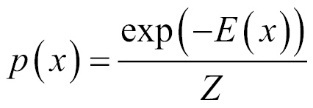
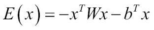
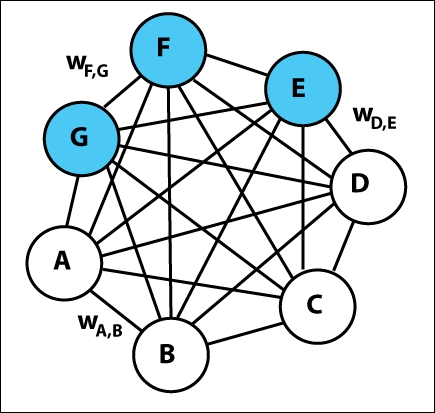

Boltzmann machines [122] are a network of symmetrically connected, neuron-like units, which are used for stochastic decisions on the given datasets. Initially, they were introduced to learn the probability distributions over binary vectors. Boltzmann machines possess a simple learning algorithm, which helps them to infer and reach interesting conclusions about input datasets containing binary vectors. The learning algorithm becomes very slow in networks with many layers of feature detectors; however, with one layer of feature detector at a time, learning can be much faster.
To solve a learning problem, Boltzmann machines consist of a set of binary data vectors, and update the weight on the respective connections so that the data vectors turn out to be good solutions for the optimization problem laid by the weights. The Boltzmann machine, to solve the learning problem, makes lots of small updates to these weights.
The Boltzmann machine over a d-dimensional binary vector can be defined as x  {0, 1} d. As mentioned in the earlier section, the Boltzmann machine is a type of energy-based function whose joint probability function can be defined using the energy function given as follows:
{0, 1} d. As mentioned in the earlier section, the Boltzmann machine is a type of energy-based function whose joint probability function can be defined using the energy function given as follows:

Here, E(x) is the energy function and Z is termed as a partition function that confirms Σx P(x)= 1. The energy function of the Boltzmann machine is given as follows:

Here, W is the weight matrix of the model parameters and b is the vector of the bias parameter.
Boltzmann machines such as EBMs work on observed and unobserved variables. The Boltzmann machine works more efficiently when the observed variables are not in higher numbers. In those cases, the unobserved or hidden variables behave like hidden units of multilayer perceptron and show higher order interactions among the visible units.
Boltzmann machines have interlayer connections between the hidden layers as well as between visible units. Figure 5.2 shows a pictorial representation of the Boltzmann machine:

Figure 5.2: Figure shows a graphical representation of a simple Boltzmann machine. The undirected edges in the figure signifies the dependency among nodes and wi,j represents the weight associated between nodes i and j. Figure shows 3 hidden nodes and 4 visible nodes
An interesting property of the Boltzmann machine is that the learning rule does not change with the addition of hidden units. This eventually helps to learn the binary features to capture the higher-order structure in the input data.
The Boltzmann machine behaves as a universal approximator of probability mass function over discrete variables.
The learning algorithms for Boltzmann machines are generally based on maximum likelihood estimation method. When Boltzmann machines are trained with learning rules based on maximum likelihood estimation, the update of a particular weight connecting two units of the model will depend on only those two units concerned. The other units of the network take part in modifying the statistics that get generated. Therefore, the weight can be updated without letting the rest of the network know. In other words, the rest of the network can only know the final statistics, but would not know how the statistics are computed.
In Boltzmann machines, with many hidden layers, the network becomes extremely large. This makes the model typically slow. The Boltzmann machine stops learning with large scale data, as the machine's size also simultaneously grows exponentially. With a large network, the weights are generally very large and also the equilibrium distribution becomes very high. This unfortunately creates a significant problem for Boltzmann machines, which eventually results in a longer time duration to reach to an equilibrium state of distribution.
This limitation can be overcome by restricting the connectivity between two layers, and thus simplifying the learning algorithm by learning one latent layer at a time.